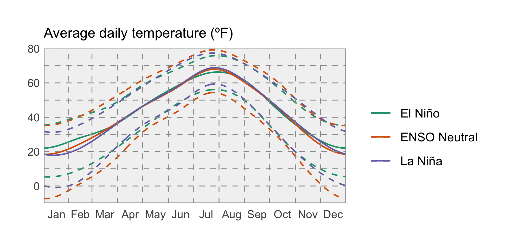
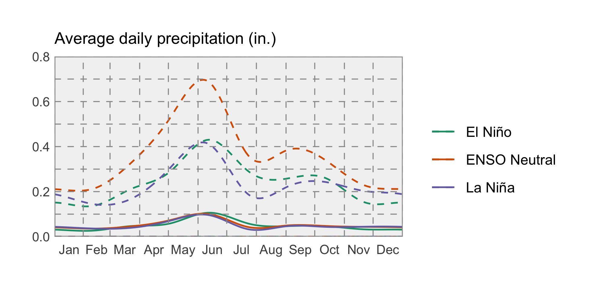

Winter Outlook: Return of El Niño?
A new Montana Mesonet station near Absarokee, MT. Photo: Kevin Hyde.
 El Niño Outlook
El Niño Outlook
Winter weather in Montana is heavily influenced by the El Niño Southern Oscillation (ENSO), the natural seasonal fluctuations in the sea surface temperature of the Pacific ocean near the equator. ENSO affects the position of the jet stream over North America. When the ocean is warmer than normal, Montana tends to experience warm, dry winters; we call this an “El Niño” event. When the ocean is cooler than normal, Montana tends to experience cool, wet winters; this is called a “La Niña.” When the ocean is near average temperatures, conditions in Montana are less predictable; this is called “ENSO Neutral.” It is important to note, however, that in the past there have been El Niño winters that were cooler or wetter than normal, and La Niña winters that were warmer and drier!
According to NOAA, there is a 65–70% chance of El Niño conditions arriving this coming winter. These maps show what an average El Niño December–February looks like relative to normal. Keep an eye on the NOAA ENSO outlook (https://www.climate.gov/enso) for the latest ENSO conditions and predictions as we head into winter.
El Niño winters are on average warmer than normal winters across Montana, especially as you move towards northeastern Montana. They are also drier than normal years, but only slightly, and only in north-central Montana; the southwestern and far eastern portions of the state actually experience slightly wetter conditions in El Niño years.
The two graphs below show how Montana as a whole is affected by the ENSO climate patterns. The solid lines represent the average conditions in each of El Niño, La Niña, and ENSO Neutral conditions (see the Reference section for an explanation of these conditions). The dashed lines represent the range of recorded conditions during the 1981–2010 period on any given day.
For temperature, ENSO conditions only have a strong influence on Montana climate in the winter months; the solid green line (El Niño) is above the other lines, indicating warmer conditions on average in El Niño years.
For precipitation, however, it is very difficult to distinguish the three solid lines. El Niño conditions lead to slightly drier winters, while La Niña conditions are indistinguishable from ENSO Neutral conditions with regard to winter precipitation across Montana.

 Temperature
Temperature
ENSO has a strong influence on weather in North America, so NOAA’s Climate Prediction Center (CPC) seasonal projections for this winter are in part guided by ENSO conditions. Due to the high probability of there being an El Niño event beginning this winter, the CPC is projecting that temperatures will likely be warmer across Montana.
 Precipitation
Precipitation
The CPC is projecting this winter will likely be drier across Montana, with more certainty for the northern and northwestern part of the state.